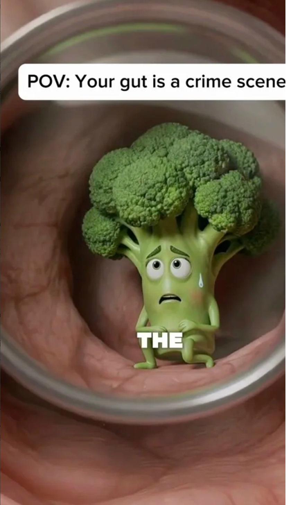
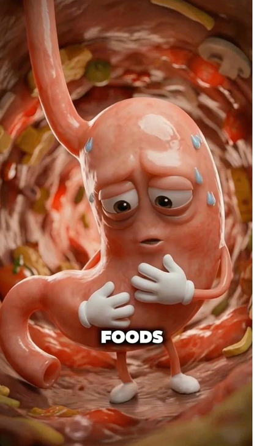
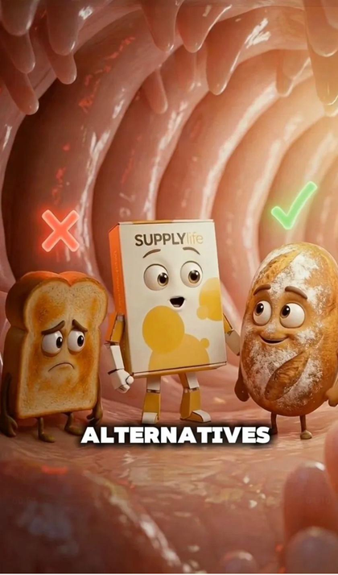
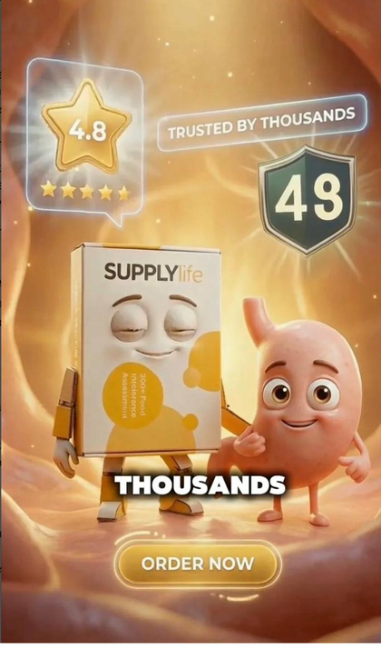
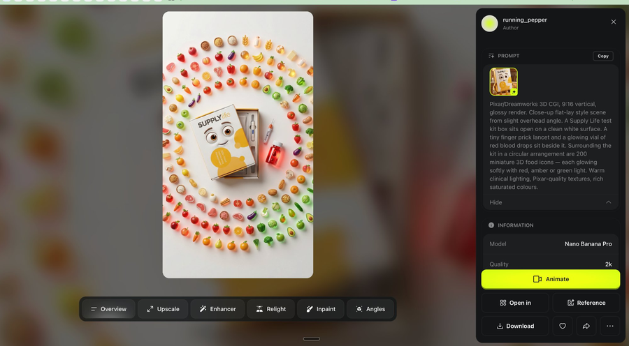
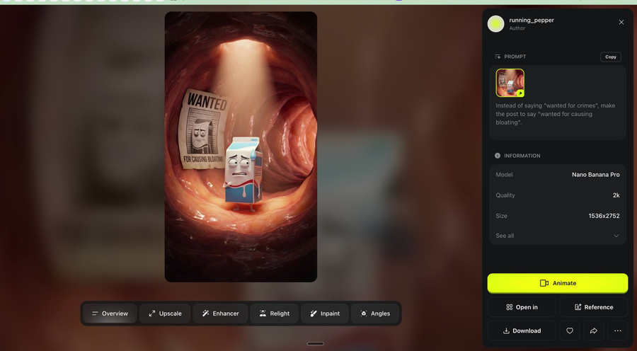
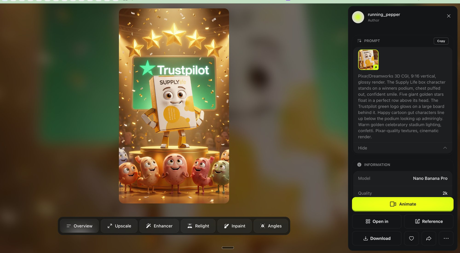

The complete workflow - every tool, every prompt, every step - so you can build these yourself.
Get the full workflow ↓



Real frames from an AI-generated animated ad - made in hours, not weeks
A film director doesn't personally operate the camera, design the costumes, or build the sets. They have the creative vision and direct specialists who execute it.
This workflow is exactly that - but the specialists are AI tools.
The most important element in every scene is the first frame - the still image the animation is built from. Get that right and everything else follows.
Don't try to come up with visual ideas yourself. Give Claude the script line and let it invent the visual. Claude knows what these tools can generate better than you do. It will suggest concepts you'd never land on alone. Your job is to pick the best idea - not invent it.
Writes the script and invents the visual concept for each scene. The creative brains of the operation.
Generates the still first-frame image from Claude's prompt at 2K quality. This still is the foundation of your animation.
Animates the still image into a clip. Consistently produces the most cinematic results for this style of content.
If the voiceover sounds robotic or flat, run it through ElevenLabs Voice Changer. 60 seconds of effort, immediately noticeable improvement.
Start with your brand's core message. Give Claude context about your product, the problem it solves, and the tone you want. Ask it to write a scene-by-scene script in the style of a Pixar-animated ad.
"Write me a script for a Pixar-style animated ad for [your brand]. The tone is [fun/dramatic/punchy]. The product is [describe it in one sentence]. The villain in the story is [the problem your product solves]. The hero is [your product/brand character]. Break it into 8-10 numbered scenes with a short script line for each."
Short punchy lines per scene. Each line describes one clear emotional beat. The villain appears early, creates tension, then your product resolves it. Ends with social proof and a CTA.
For each scene, ask Claude to give you 3 completely different creative visual options for the first frame. Do not tell Claude what the scene should look like. Give it total creative freedom.
"Give me 3 creative different visual variations for a Nano-Banana first frame prompt for this script line: [paste the line]"
Why 3 and not 1? One option limits you to Claude's first thought. Three gives range - option 3 is often the most unexpected and most compelling. Claude knows what Nano-Banana can generate, so let it do the thinking.
Script line: "I'm peas. Every time you eat me, I inflate your gut."
Option 1: Gang of peas in a factory - organised crime energy, matching outfits, red warning signs
Option 2: Pea with a bicycle pump jammed into a gut wall, gas bubbles rising, walls stretching
Option 3: Peas in a courtroom dock, gut as judge, gavel mid-slam
Option 2 was chosen - the pump tells the whole story in one frame.
Go to higgsfield.ai/image/nano_banana_2. Paste Claude's chosen prompt. Generate 2-3 variations and pick the strongest.


Upload your Nano-Banana still to Kling as the reference frame and add your animation prompt. The golden rule: simpler = better. One physical action, described in plain language. You don't need Claude for this step.
"Slow cinematic push, character turns to face camera with lighting shift, gas bubbles spiral with glow effects, walls pulse, amber light intensifies from left side"
"The pea pumps the bicycle pump slowly. Gas bubbles rise up the gut tunnel walls."
Upload the Nano-Banana still as your reference image. Set clip length to 5 seconds. Keep motion intensity on the lower end - subtle movement reads as cinematic, not jittery.
Once your scenes are stitched together, add the voiceover. If it sounds slightly robotic or flat - run the audio through ElevenLabs Voice Changer before publishing.
Stitch your clips in CapCut, Premiere, or DaVinci. Add karaoke-style word-by-word captions and export at 9:16.
9:16 vertical - 1080x1920 - Cuts every 2-3 seconds - Captions: white text, black outline, 60-70% down the frame - Keep all key action centred (avoid top 15% and bottom 20% for platform safe zones)
"I'm peas. Healthy, right? For some of you, I'm the reason you can't stop bloating - and nobody even knows it."
"Give me 3 creative different visual variations for a Nano-Banana first frame prompt for this line."
Pixar/Dreamworks 3D CGI, 9:16 vertical, glossy render. Interior gut tunnel, warm pink fleshy curved walls. Gang of small anthropomorphic green pea characters - round, bright green, identical smug faces - standing like a mob crew. One pea has a tiny bicycle pump jammed into the gut wall, already pumping. Gas bubbles visibly inflating the walls. Dramatic low-angle lighting. Pixar-quality textures, cinematic render.
"The pea pumps the bicycle pump slowly. Gas bubbles rise up the gut tunnel walls."
The resulting frames:

Everything is in this guide. You can take this and build it yourself this week. If you'd rather have us handle the production while you focus on strategy, that's what we're here for.
Book a free 20-min call →For brand owners, marketers, and creative teams ready to add AI animation to their ad strategy.